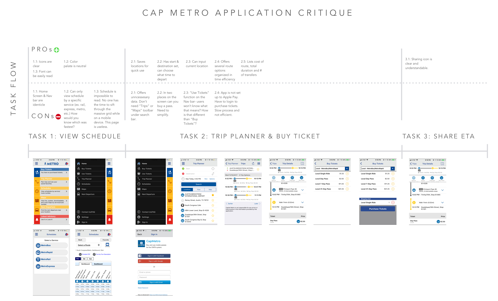

Overview: It has been observed that Austin CapMetro App isn’t meeting users’ needs of easily finding routes to take and getting notifications for rides, which is causing less users to use the app and ride the bus. I asked myself how might I improve the existing application so that the product is more successful based on user use of the app and bus tickets bought.
After identifying that the app inefficiently conveys information, I decided to ask potential users of the Austin CapMetro app what their current frusterations were with the existing app and what features they were looking for.
I asked users a series of questions to better understand their transportation behavior. View Interview Questions Here.
Once I got initial insight to the current problems that exist within the CapMetro app, I also assigned users to login within the current application and perform different tasks to help us identify interface issues and identify needed features.
Shown below is the current workflow for performing these actions within the app, and listed below are my critiques.
I decided to focus on designing specifically with the biker persona in mind, with the intention of creating an easier experience transitioning from bike to bus on a person's daily commute while remaining mobile. I wanted features for being able to reserve a spot on the bike rack, and a way to let bus drivers know that extra time should be alloted for the loading time. The ultimate goal of the CapMetro design was to simplify.
Through rapid iteration and testing, I quickly put together mockups of my designs and improved my system with each round.
I started small with simple sketches and wireframes. In the next round I began to implement more detail into the interface, until I eventually built out an entire platform with tools like Invision and Sketch to make a functional prototype.